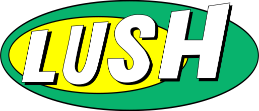
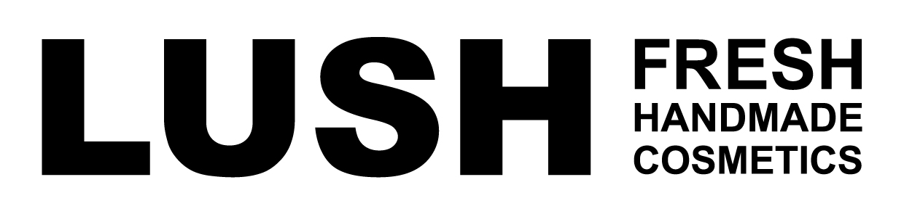
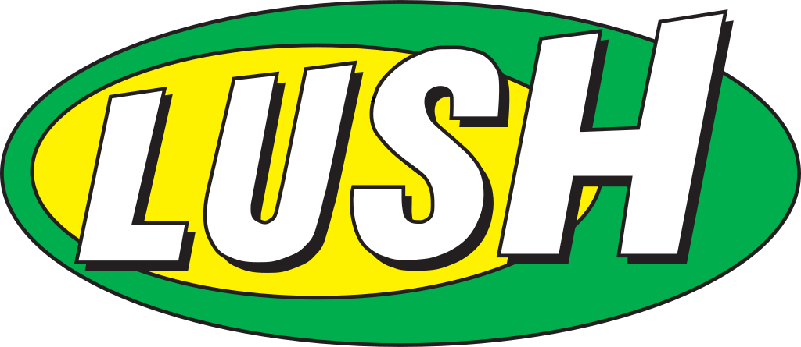
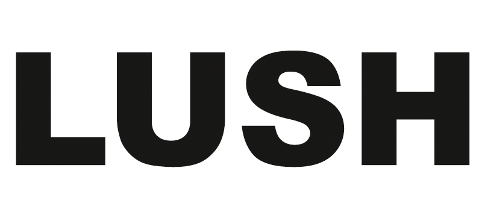

러쉬 LUSH
러쉬(LUSH)는 신선한 천연 원료로 만든 핸드메이드 화장품을 판매하는 영국 코스메틱 브랜드이다.
최종 업데이트

러쉬는 어떤 브랜드인가
러쉬(Lush)는 1995년 영국 남부 항구도시 풀(Poole)의 하이스트리트 매장에서 출발한 핸드메이드 코스메틱 브랜드다. 모발 전문가(트리콜로지스트) 마크 콘스탄틴과 아내 모 콘스탄틴, 로웨나 버드, 헬렌 암브로센, 리즈 위어, 폴 그리브스 등 여섯 명이 공동 창업했다.
신선한 과일과 채소를 갈아 만드는 식료품점 같은 매장 콘셉트와 포장을 없앤 고체 제품으로 차별화했다. 첫 전환점은 1996년 캐나다 밴쿠버에 연 첫 해외 매장이고, 두 번째 전환점은 2021년 주요 소셜미디어 철수 선언이다.
현재 20개국 이상에서 사업을 펼치며 그룹 연매출은 약 6억 7,500만 파운드, 임직원은 약 1만 3,300명 규모다.
러쉬는 어떻게 봐야 할까
러쉬의 핵심은 광고가 아니라 매장 그 자체를 마케팅 매체로 삼는 감각형 소매다. 비누를 치즈처럼 잘라 진열하고 페이스 마스크를 얼음 위에 올려 식료품점 분위기를 연출하며, 향과 색으로 행인을 끌어들이는 살아 있는 광고판처럼 매장을 운영한다.
같은 윤리적 뿌리를 가진 더바디샵이 정돈된 진열과 중도적 가격, 차분한 활동주의로 대중성을 노린다면, 러쉬는 신선도(식품처럼 표기하는 제조일과 사용기한), 포장 최소화, 더 도발적인 캠페인으로 18~35세 가치 소비층을 정조준한다. 2021년 11월 인스타그램·페이스북·틱톡·스냅챗 계정을 동시에 닫은 결정은 상징적이다.
마크 콘스탄틴은 청소년 정신건강 위해를 이유로 약 1,000만 파운드 손실도 감수하겠다고 밝혔다. 추적형 디지털 광고에 기대지 않겠다는 선언으로, 데이터 기반 성장이 표준이 된 뷰티 업계에서 역행에 가까운 베팅이었다.
한국은 러쉬의 네 번째 해외 진출국으로 백화점과 번화가 매장에서 모든 제품을 직접 체험하게 하는 동시에, 전 세계에서 가장 비싼 가격대로 판매되는 시장이라는 양면성을 보인다.
러쉬는 어떻게 시작되고 성장했나
창업의 배경에는 두 번의 실패가 있다. 마크 콘스탄틴은 풀로 돌아와 프리랜서 화장품 일을 하며 더바디샵 창립자 아니타 로딕에게 샴푸 같은 자작 샘플을 보내 납품을 시작했다.
이후 지식재산권 갈등 끝에 1991년 자신의 회사를 약 1,700만 파운드에 로딕에게 매각했다. 그 자본을 통신판매 스타트업 코스메틱스 투 고에 재투자했지만 가격을 지나치게 낮게 책정한 탓에 1994년 파산했다.
이 경험을 발판으로 1995년 풀 하이스트리트 29번지에 러쉬 1호점을 열고, 신선한 과채를 직접 갈아 만드는 제품으로 다시 출발했다. 초기 대표 제품은 물에 넣으면 색과 향이 퍼지는 배스밤과 버블바였다.
첫 번째 전환점은 1996년 캐나다 밴쿠버 덴먼스트리트 1118번지에 연 첫 해외 매장이며, 두 번째는 1997년 크로아티아·호주·프랑스로 이어진 다국가 동시 확장이다. 이 시기에 영국을 넘어 북미·유럽·아시아태평양으로 발판을 넓혔다.
러쉬의 브랜드 아이덴티티는 무엇인가
러쉬의 가치관은 명확하다. 30년 넘게 동물실험에 반대해 왔고, 모든 제품이 100% 베지테리언이며 라인업의 89%가 비건이다.
포장을 없앤 네이키드 제품이 판매 지역에 따라 전체의 30~50%를 차지하고, 재료의 산지·제조 시점·만든 사람까지 포장에 표기하는 윤리적 구매를 내세운다. 시각 정체성은 일관성이 핵심이다.
전 세계 매장이 거의 같은 디자인을 공유하고, 안내문과 제품명·가격을 손글씨 서체로 적어 수작업의 인상을 강화한다. 검은 바탕에 흰 글씨, '프레쉬 핸드메이드 코스메틱스' 태그라인이 매장과 제품 전반에 반복된다.
타깃은 윤리적 소싱과 환경, 동물권을 가격이나 명품 위신보다 우선하는 18~35세 의식 있는 소비자다. 브랜드 보이스는 명품 특유의 딱딱하고 중후한 톤과 달리 유쾌하고 자유분방하며, 캠페인에서는 거침없는 활동주의를 드러낸다.
러쉬의 대표 제품과 서비스는 무엇인가
제품군은 입욕 카테고리를 중심으로 배스밤, 버블바, 샤워 젤리, 보디 스프레이, 비누, 헤어·스킨케어, 수면을 돕는 슬리피(Sleepy) 컬렉션 등으로 넓다. 대표 시그니처는 핑크빛 거품을 천천히 퍼뜨리는 더 컴포터(The Comforter) 배스밤으로, 같은 향이 버블바 등 여러 형태로도 나온다.
가격대는 영국 기준 더 컴포터 배스밤이 한 개 약 4파운드 안팎으로, 부담 없이 시도하는 소비를 겨냥한다. 다만 한국은 전 세계 러쉬 매장 가운데 가장 비싼 시장으로 꼽혀, 물가가 높은 영국·미국·일본보다도 두 배가량 높은 가격에 팔린다.
유통은 직영 매장과 자사 온라인몰을 중심으로 하며, 한국에서는 백화점과 주요 번화가 매장에서 모든 제품을 직접 써볼 수 있게 한다.
러쉬는 지금 어떤 상태인가
본사는 영국 풀에 있다. 모회사는 콘스탄틴 가족과 공동 창업자들이 지배하는 비상장 기업으로, 지분 구조 세부는 미공개다.
임직원은 소매·디지털·제조·지원을 포함한 그룹 기준 약 1만 3,300명이다. 매장은 20개국 이상에서 운영되며, 2024년 기준 영국 약 102개, 일본 약 77개 매장을 두고 있다.
그룹 연매출은 약 6억 7,500만 파운드 수준이며, 2025년 단일 국가로는 영국이 약 3억 1,980만 파운드로 가장 컸고 미국이 전체의 31%를 차지했다.
러쉬 연혁 — 주요 사건은 언제였나
러쉬 로고는 어떻게 변해왔나
대표 로고대표 브랜드 마크
BI/CI 아카이브보관 이미지 1
BI/CI 아카이브 2보관 이미지 2
BI/CI 아카이브 3보관 이미지 3
BI/CI 아카이브 4보관 이미지 4자주 묻는 질문
러쉬는 어느 나라 브랜드인가요?
러쉬는 영국의 뷰티·퍼스널케어 브랜드입니다.
러쉬는 언제 설립되었나요?
러쉬는 1995년 설립되었습니다.
러쉬의 브랜드 아이덴티티는 무엇인가요?
러쉬의 가치관은 명확하다.
러쉬의 대표 제품은 무엇인가요?
제품군은 입욕 카테고리를 중심으로 배스밤, 버블바, 샤워 젤리, 보디 스프레이, 비누, 헤어·스킨케어, 수면을 돕는 슬리피(Sleepy) 컬렉션 등으로 넓다.
러쉬의 본사는 어디에 있나요?
본사는 영국 풀에 있다.
러쉬의 공식 웹사이트는 어디인가요?
러쉬의 공식 웹사이트는 https://www.lush.com/ 입니다.
출처와 검증
러쉬 관련 참고: 공식 웹사이트 · 위키데이터 Q1585448 · 한국어 위키백과 · 영어 위키백과. 브랜드명은 한글과 원어를 함께 표기하되 데이터에 없는 표기는 만들지 않습니다. 기원 국가·설립연도는 검수된 정의문에서 확인된 값을 우선하고, 없을 때만 공식 웹사이트 URL이 일치하는 위키데이터 개체의 값을 씁니다. 위키데이터 값은 2026-09-07 기준입니다.